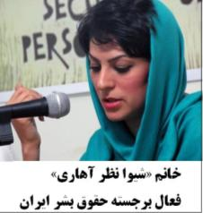

|
|

نظرات دکتر مصدق در مورد بانوان / حمید رضا مسیبیان
تقدیم به همه مبارزان راه آزادی و حقوق زنان و به خصوص خانم¬ها «بهاره هدایت» و «شیوا نظرآهاری»
جمعه29 مرداد 1389
رویکردهای دکتر مصدق در مورد بانوان و حقوقشان
(این مقاله پیشتر با عنوان «نظرات دکتر مصدق در مورد بانوان» منتشر شد و در اردیبهشت 92 با ویرایش مجدد منتشر گردید.)


این مجموعه را به خانم «بهاره هدایت» از برجستهترین فعالان دانشجوئی و فعالان حقوق زنان ایران تقدیم میکنم که با حکم حیرت آور 5/9 سال زندان مواجه شده است. همچنین به خانم «شیوا نظرآهاری» فعال برجستۀ حقوق بشر و حقوق زنان تقدیم مینمایم که حکم 4 سال زندان و تبعید و حتی 74 به ضربه شلاق دارد.
پیشگفتار: زنان در طول تاریخ از مظلومترین افراد بودهاند و بعضاً از سوی مردان برجسته هم مورد ظلم قرار گرفتهاند. این مساله را میتوان به وضوح در تاریخ ایران نیز مشاهده کرد. بیشتر مردم ایران در دوران انقلاب مشروطه(1285ه.خ) و تا سالها بعد از آن هم دید درستی به زنان و حقوق آنان نداشتند. اکثراً زنان را در خدمت مردان و به منزلۀ جنس پائینتر میدانستند. بیشتر زنان حتی حق خروج از خانه را بدون اجازه مرد را نداشتند و عملاً جایگاه آنها «داخل خانه» بود. البته این مشکلات در آن عصر در تمام دنیا وجود داشت. مثلاً مقارن انقلاب مشروطه ایران، فقط چند کشور به زنان حقوق سیاسی(حق رای و انتخاب شدن) اعطا نموده بودند. به این ترتیب رویکرد مردان قدیمی ایران به حقوق بانوان میتواند نشانۀ مناسبی برای میزان التزام آنان به رعایت حقوق سایرین و حتی سبک عملکرد سیاسی آنان باشد.
در این راستا بر آن شدیم که دیدگاهها و رویکردهای دکتر مصدق نسبت به بانوان را بررسی نمائیم. در این مجموعه تلاش میکنیم این مسائل را در دو بخش:
1- رویکردهای شخصی دکتر مصدق دربارۀ بانوان
2- رویکردهای دکتر مصدق دربارۀ حقوق قانونی بانوان
بررسی نمایم.
رویکردهای شخصی دکتر مصدق دربارۀ بانوان
احترام بانوان نزد دکتر مصدق
مصدق از معدود مردان نسل مشروطه است که از جوانی احترام فراوانی برای بانوان قائل بود و حتی آنان را «ملکه خانه» خطاب میکرد. وی در تاریخ 22 اوت 1909م(31 مرداد 1288ه.خ) در مصاحبه با یک بانوی خبرنگار فرانسوی با نام «رنه وییه یار» و نام مستعار «آ.دو روشبرون» چنین میگفت:
"س: وضعیت زنان در ایران چگونه است؟
ج: [دکتر مصدق] زن در مملکت ما همان موقعیتی را دارد که قرآن برایش تعیین کرده است. همین.

با این حال، زنان ما عروسکهای توخالی و بوالهوس نیستند. زن ملکۀ خانه است. او بیشتر مادر است تا همسر، و در طول این سالهای آشفته توانستیم او را در عمل ببینیم."
او تا واپسین روزهای زندگی همین نگرش را حفظ کرد. مثلاً بوسیدن دست ملکه «ثریا» یکی از نشانههای این مساله است. البته بوسیدن دست بانوان در مراسم و مجالس، در بسیاری از کشورهای غربی تا حدی رایج و اقدامی تشریفاتی میباشد؛ اما نکته آنجاست که دکتر مصدق اکراه خاصی از دست بوسی داشت. هرگز دست محمدرضا شاه را نبوسید و اجازه نمیداد کسی دست خودش را ببوسد. به این لحاظ میتوان نتیجه گرفت دکتر مصدق همزمان که حاضر به دستبوسی و کرنش در برابر قدرتمندان نبود، برای «مقام زن بودن» احترام خاصی قائل میشد. چنان دیدگاهی هم در آن دوران بسیار قابل توجه است.
نگرش دکتر مصدق به فعالیتهای اجتماعی زنان
مصدق مدافع و مشوق فعالیت سیاسی بانوان و دخالت آنان در امور اجتماعی بود. او چنان زنانی را تحسین میکرد چنانکه در همان مصاحبۀ ذکر شده با رنه وییه یار گفته است:
"... در طول این سالهای آشفته توانستیم او[زن ایرانی] را در عمل ببینیم. برای اینکه تمامشان، از هر طبقهای، از مشروطیت پشتیبانی کردند و به آن علاقهمند بودند. قهرمانانی داریم شایستۀ افسانههای زنان پارت و با احترامی زیاد، میتوانم از عمۀ محمد علی شاه یاد کنم که با نگاهی مغرور و بدون تاثر سربازان غارتگر و گستاخ برادرزادهاش را نظاره میکرد که در مقابلش تمام یادگارهای با ارزش محل اقامتش را ویران کردند. او در مقابل خرابههای کاخش اشکی هم نریخت. در جریان انقلاب با افتخار سربلند ماند. همه را به فرانسوی ها بگوئید. نه برای تمجید از ما اما برای اینکه ما دوستی و احترام آنها را میخواهیم."
او در دوران دولتش و حتی بعد از کودتا معمولاً از مردان و زنان به طور همزمان میخواست که فعالیت کنند و مثلاً میگفت:
"خواهانم به همت افراد وطنپرست از زن و مرد روزی برسد که ملت ایران بتواند آزادی و استقلال از دست رفتۀ خود را به دست آورد و خود را در ردیف دول مستقل و آزاد قرار دهد و آن روز است که ما میتوانیم به یکدیگر تبریک بگوئیم و اظهار شادی کنیم."
و یا آخرین دفاع وی در دادگاه نظامی چنین بود:
" از مردم رشید و عزیز ایران مرد و زن تودیع میكنم و تأكید می نمایم كه در راه پرافتخاری كه قدم برداشتهاند از هیچ حادثهای نهراسند و یقین بدانند كه خدا یار و مددكار آنها خواهد بود."
روابط دکتر مصدق با بانوان منزلش
مصدق با بانوان منزلش نیز روابط خوبی داشت. در زمانی که اسم زنان در مجامع عمومی به ندرت ذکر میشد، بارها تاکید میکرد که راهنمای بخش مهمی از زندگی او این جمله مادرش است که گفته:
"وزن اشخاص در جامعه بقدر شدائدیست که در راه مردم تحمل میکنند"
یا در فرهنگی که مدام این ارزش تبلیغ میشد که مرد باید چندین سال از خانمش بزرگتر باشد، او سه سال از همسرش کوچکتر بود؛ اما با احترام و علاقه بسیار با او برخورد میکرد. مرحوم خازنی به عنوان شاهد عینی این مساله میگوید:
"س: [دکتر مصدق] با خانم خود چگونه رفتار میکرد؟
آقای دکتر خیلی به ایشان احترام میگذاشت. خانم ضیاءالسلطنه سه سال از دکتر مصدق بزرگتر بود."
و به قول خانم «شیرین سمیعی» همسر نوۀ دکتر مصدق، این دو در تمام عمر با صلح و صفا با هم زندگی کردند.
تاسفآور است که بدانیم دکتر مصدق در دوران تبعید بعد از کودتا برای اولین بار درخواست کرد که بتواند بر بالین همسر بیمارش در تهران حضور یابد؛ اما با این درخواست او موافقت نشد. در نهایت دکتر مصدق نتوانست هنگام وفات همسرش، او را ببیند و این مساله بعدها موجب اندوه شدیدش بود.
رویکردهای دکتر مصدق دربارۀ حقوق قانونی بانوان
دیدگاه دکتر مصدق به برابری حقوق زن و مرد و چند همسری
تا اینجا از احترام فراوان دکتر مصدق به بانوان سخن گفته شد. از آنجائی که دکتر مصدق دارای دکترای حقوق از از دانشگاه سوئیس بود، دید مناسبی به مسائل حقوقی داشت و طبیعی بود که تلاش کند تا حقوق بانوان در قوانین هم روشن شده و احقاق گردند.
وی بخشی از دیدگاههایش نسبت به برابری حقوق زن و مرد را به شکل ضمنی در پانویس رسالۀ دکترایش در سال 1914م(1293ه.خ) مطرح کرده و نوشته است:
"... امروز طبقات تعلیم یافته فهمیدهاند که باید مساوات اخلاقی بین جنسهای مختلف برقرار باشد."
و در همان رساله سن بلوغ برای زنان و مردان را 21 سال اعلام نموده و بحث 9 سال برای زنان و 15 سال برای مردان را رد کرده است. خودش نیز ارث بین فرزندان دختر و پسرش را به نسبت مساوی تقسیم کرد که نشانگر اعتقادش به برابری سهمالارث دختر و پسر است.
همچنین مصدق با اعتقاد به عدالت بین زن و مرد، به شدت مخالف چند همسری بود چنانکه نوشته است:
" باری اگر این طور در نظر گرفته شود که یک زن باید فقط به یک مرد تعلق داشته باشد و نباید با چندین مرد رابطه پیدا کند عدالت حکم میکند که یک مرد هم فقط با یک زن رابطه داشته باشد.
...
تعدد زوجات آثار ناهنجاری دارد.
...
بالاخره بر خلاف دکترین مذهبی است که ادعا شود تعدد زوجات خواست خداست. قانون موسی و حقوق اسلامی، با قرار خود مسلمانان، در واقع از یک منبع الهی مشترک سرچشمه میگیرند، بنابراین چگونه میتوان گفت که خداوند در همان سرزمینها برای عدهای تعدد زوجات و برای دیگران ازدواج فردی را خواسته است. بعلاوه توضیح داده شد که قرآن موجد تعدد زوجات نبوده بلکه برعکس تعداد زنان را که قبلاً نزد مردم عرب غیرمحدود بود محدود کرده است."
که چنین دیدگاهی از دولتمردان آن دوران بسیار قابل توجه است.
رویکرد دکتر مصدق و دولتش به حجاب و قوانین مربوط به آن
مصدق مدافع آزادی بانوان در مسالۀ حجاب و مخالف هر نوع اجبار بود. به همین دلیل مخالف اقدامات رضاشاه در کشف حجاب اجباری بود. در عین حال اعتقاد داشت که رفع حجاب بایستی با کار فکری و به آرامی و بدون فشار صورت گیرد چنانکه میگفت:
"اگر به تدریج که دختران از مدارس خارج میشدند حجاب رفع میشد چه میشد؟ رفع حجاب از زنان پیر و بیتدبیر چه نفعی برای ما داشت؟"
ویا
"کشف حجاب باید به واسطه اولسیون و به واسطه تکامل اهل مملکت باشد نه به واسطه یک کسی که یک قدرتی پیدا کرده."
دولت مصدق نیز مدافع آزادی حجاب بود و علیرغم تمام فشارها ، حاضر نشد حجاب اجباری به زنان تحمیل کند. همچنین کسی در دوران دولت ملی بابت حجاب شخصی، از طرف حکومت دچار مشکل نمیشد.
رویکرد دکتر مصدق و دولتش به حق رای زنان
زنان از شروع مشروطه حق رای نداشتند و اکثریت روحانیون برجسته مخالف حقوق سیاسی زنان بودند. دولت دکتر مصدق اولین دولتی بود که در صدد بر آمد به زنان حق رای اعطا نماید و آن را به شکل محتاطانه به پیش میبرد.
ابتدا «لایحه قانونی شهرداری» برای انتخابات انجمنهای شهر و قصبه و تعیین شهردار توسط این انجمنها، در 11 آبان 1331خ به امضاء دکتر مصدق رسید و منتشر شد. محدودیتی هم برای زنان جهت رای دادن، انتخاب به عنوان عضو انجمن یا حتی شهردار شدن، در آن وجود نداشت. مباحثی اندکی نیز پیرامون این طرح به وجود آمد ولی حساسیتی ایجاد نشد و لذا تلاش جهت بهبود طرح ادامه یافت.
دولت مدت کوتاهی بعد در 26 آذر، « لایحۀ قانونی انتخابات مجلس شورای ملی» را برای اطلاع عموم منتشر کرد. البته مشابه شرایط گذشته، بانوان و برخی دیگر را از حق رای محروم نمود اما همزمان از مردم خواسته شد که نظرشان را دربارۀ قانون جدید اعلام کنند. بعد دکتر «شایگان» رئیس کمیسیون انتخابات، در مصاحبه با خبرنگار اطلاعات موضع مهمی گرفت که میتوانست به معنی موافقت دولت با حق رای زنان باشد. او در آنجا چنین گفت:
"دولت باید مملکت را روی اصول دموکراسی اداره کند، زیرا قانون اساسی ما مربوط به یک کشور مشروطه و دموکرات است بنابراین اگر اکثریت مردم خواهان این باشند که بانوان هم در انتخابات شرکت نمایند، البته دولت قانون انتخابات را به همین نحو اصلاح خواهد کرد و بدیهی است در صورت ابراز علاقۀ اکثریت مردم آقای دکتر مصدق نیز خواهان شرکت بانوان در انتخابات عمومی خواهد بود. اصولاً قانون مذبور برای اظهار نظر ملت ایران انتشار یافته و دولت خواسته است هر عیب و نقصی که مردم در آن میبینند متذکر بشوند و دولت را برای اصلاح آن عیوب ارشاد بنمایند."
و دکتر مصدق هم این سخنان را تکذیب نکرد لذا مشخص بود دولت مایل به اعطای حق رای به بانوان است؛ در عین حال دکتر مصدق با توجه به مشکلات شدید خارجی و داخلی، جانب احتیاط را از دست نمیداد و در برخورد مستقیم با روحانیون برجسته احتیاط میکرد.
در همان هنگام بسیاری از زنان و سازمانهای فعال امور بانوان خواهان حق رای زنان شدند و تبلیغات زیادی بر این مساله صورت گرفت. دولت هم واکنش مثبتی به این مسائل داشت چنانکه حدود هفتاد نفر از بانوان برای جلب حمایت دولت به دیدار دکتر مصدق رفتند و حدود یک ساعت با وی گفتگو نمودند. پانزده تن از بانوان نیز به دیدن مهندس «رضوی» از اعضای برجسته جبهۀ ملی و نایب رئیس مجلس رفتند. با مجموع این مسائل به نظر میرسید که اقدامات مناسبی جهت اعطای حق رای به بانوان در حال انجام است.
متاسفانه این مساله با مخالفت شدید برخی نیروهای مذهبی روبرو شد و به ویژه «آیتالله سیدمحمد بهبهانی» به تندی علیه آن موضع گرفت. او طی نامههای جداگانه به شاه، دکتر مصدق و آیتالله کاشانی مصرانه میخواست که دولت از این بحث منصرف شود. دولت را به بلوا در بازار تهدید میکرد و حتی به تحریک سایر نیروهای مذهبی و به خصوص روحانیون برجسته میپرداخت. مثلاً «آیتالله بروجردی» برجستهترین رهبر مذهبی و اصلیترین مرجع تقلید شیعیان کشور در آن دوران در پاسخ بهبهانی دربارۀ حق رای زنان نوشت:
"بعرض عالی میرساند اگرچه اولیاء امور متوجه باین معنی بوده و هستند لکن نظر به آنکه همین قسم که مرقوم داشتهاند ممکن است بعیداً که بعض زمزمهها تاثیری داشته باشد، مستدعی است تذکر دهید که در کشور اسلامی امری که مخالف احکام ضروریه اسلام است ممکنالاجراء نیست. دوام تاییدات جناب مستطاب عالی را از خداوند عز شأنه مسئلت مینماید.
حسین الطباطبائی"
برخی روحانیون برجسته دیگر از قبیل «آیتالله صدر» و «آیتالله حجت» هم مخالفتشان با حق رای زنان را در پاسخ به بهبهانی اعلام میکردند. در نهایت بهبهانی در ذیل پاسخ این مراجع، نامهای به مجلس ارسال و دخالت زنان در امر انتخابات را حرام و غیرجایز اعلام نمود. گروههای مذهبی دیگری همچون «فدائیان اسلام»، «وعاظ تهران»، «جامعۀ اهل منبر تهران» و... نیز قاطعانه با حق رای زنان مخالفت میکردند.
دولت هم به دلیل موضع تند مخالفان مذهبی و به خصوص برای پرهیز از درگیری با آیتالله بروجردی در آن دوران که بحرانهای داخلی و خارجی کشور را تهدید میکرد، تا حدی درباره حق رای و حق انتخاب زنان سکوت نمود. در عین حال این حقوق را تکذیب نمیکرد و احتمالاً دکتر مصدق در نظر داشت مشکل را در شرایط مناسب حل نماید. مثلاً چند ماه بعد در 25 خرداد 1332 لایحه اصلاح شده قانون شهرداری به امضای نخستوزیر رسید که در آن کماکان منعی برای حق رای زنان و عضویت آنان در انجمنها و حتی انتخابشان به عنوان شهردار، وجود نداشت.
متاسفانه این لایحه و موارد مشابه مجال اجرا نیافتند زیرا دو ماه بعد کودتای 28 مرداد رخ داد و این بحث تا حدود ده سال بعد راکد ماند.
با این تفاسیر مشخص است که دکتر مصدق از معدود مردان نسل مشروطه بود که اعتقاد و التزام راستینی به حقوق بانوان داشت و حتی احترام ویژهای تا حد «ملکۀ خانه» برای آنان قائل میشد. وی مشوق فعالیتهای اجتماعی بانوان بود و به حقوق برابر زن و مرد اعتقاد داشت و به شدت مخالف چند همسری بود. دولت او نیز اولین دولت ایرانی بود که تلاش کرد به زنان حق رای دادن و انتخاب شدن اعطا کند اما این مساله با کودتای 28 مرداد ناکام ماند.
به کوشش: حمید رضا مسیبیان--- hamosaieb@yahoo.com